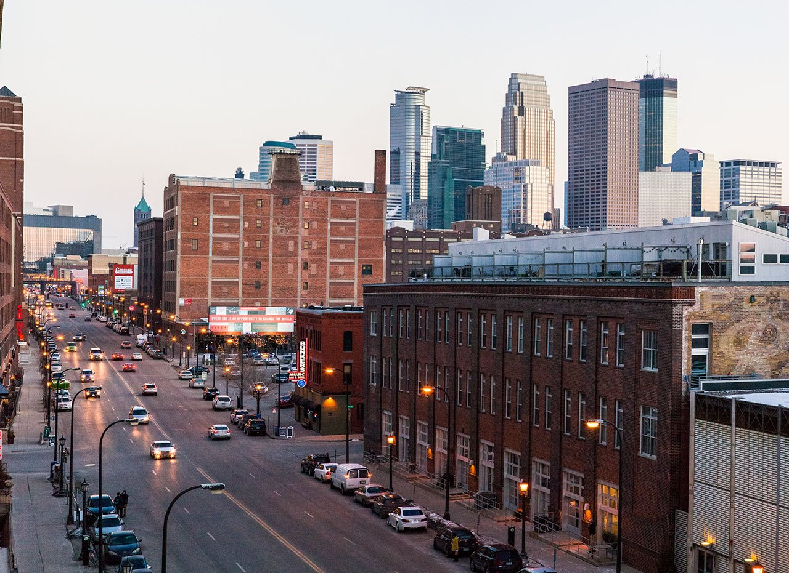
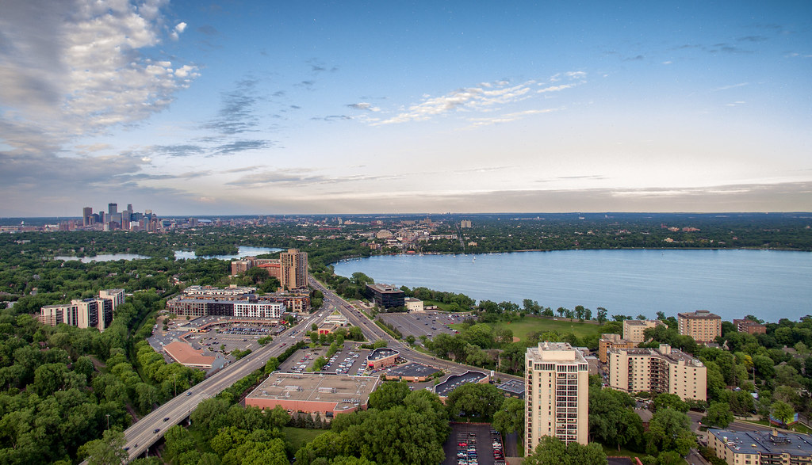
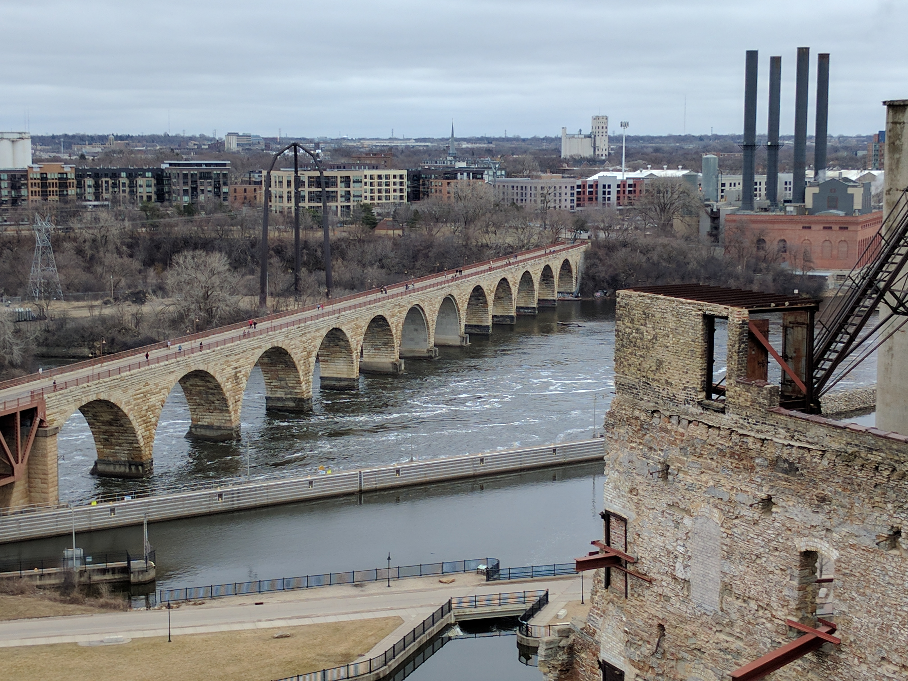

Also known as the Warehouse District, the North Loop is a vibrant neighborhood known for its cool start-up vibe, innovative restaurants, hip bars and gay nightspots. Converted warehouses from the late 19th and early 20th centuries contain indie fashion and design shops, and the Minneapolis Farmers Market sells produce, locally made snacks and candy. Minnesota Twins baseball fans head to Target Field on game days. - Google
Bde Maka Ska is the largest lake in Minneapolis, Minnesota, United States, and part of the city's Chain of Lakes. Surrounded by city park land and circled by bike and walking trails, it is popular for many outdoor activities. The lake has an area of 401 acres and a maximum depth of 87 feet. - Wikipedia
The Stone Arch Bridge is a former railroad bridge crossing the Mississippi River at Saint Anthony Falls in downtown Minneapolis, Minnesota. It is the only arched bridge made of stone on the entire Mississippi River. It is the second oldest bridge on the river next to Eads Bridge. - Wikipedia
